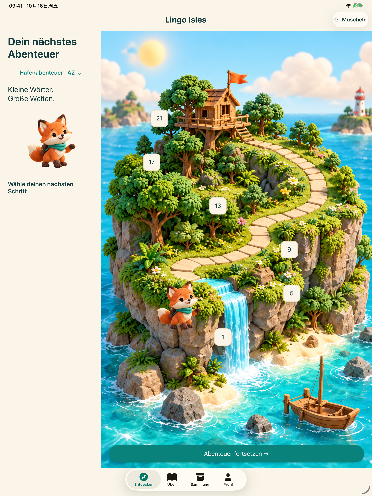
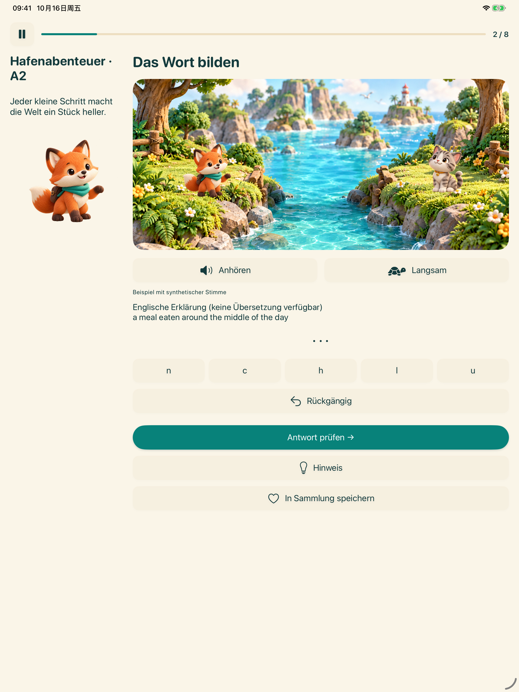
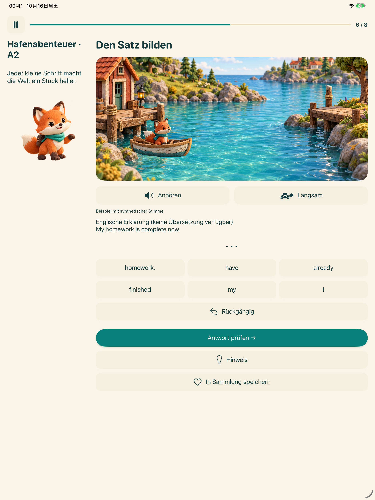
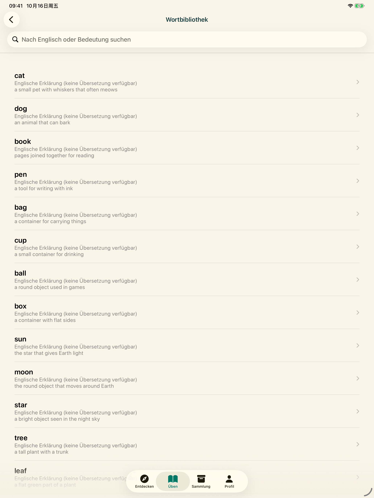

Ein genauerer Blick auf die Inseln
Aufnahmen aus der App in der gewählten Oberflächensprache. Die Lernsprache ist Englisch.
iPhone


iPad








Aufnahmen aus der App in der gewählten Oberflächensprache. Die Lernsprache ist Englisch.



